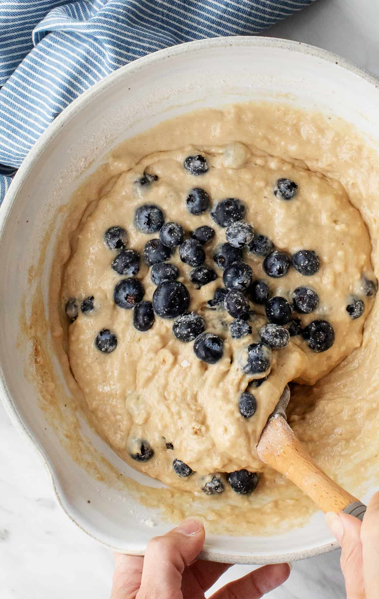

1. Preheat the oven to 400 degrees F (200 degrees C).
2. Line a 12-cup muffin tin with liners.
3. Stir together milk, egg, and oil in a large bowl.
4. Add flour, baking powder, sugar, and blueberries; gently mix the batter with only a few strokes.
5. Spoon batter into the muffin tin.
6. Bake in the preheated oven until a toothpick inserted into the center comes out clean, about 20 minutes. Serve hot.
